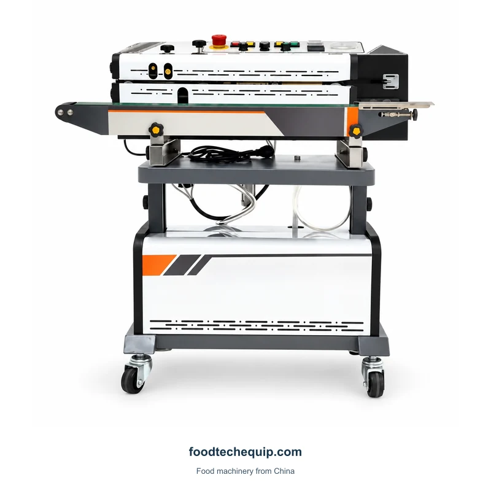
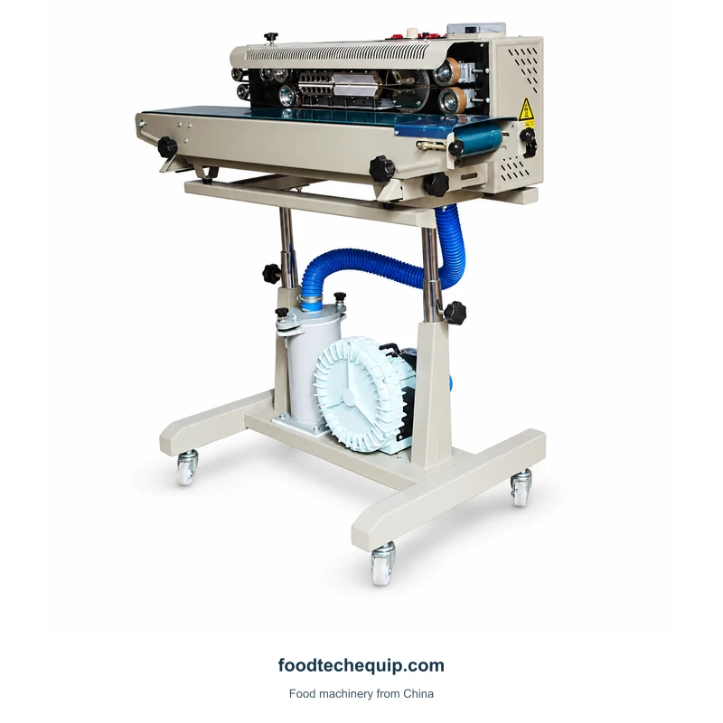
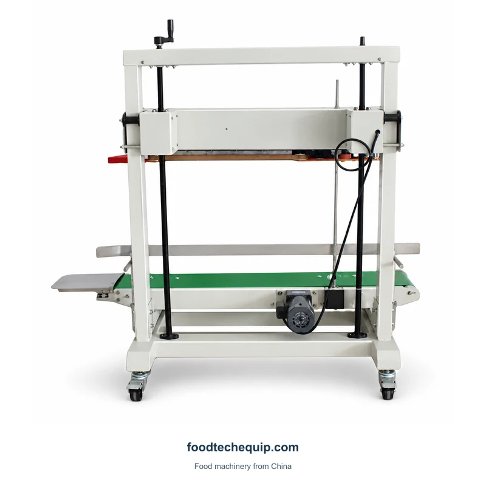

لحام الأكياس
آلة لحام الأكياس بالشريط المستمر
شريط لاصق مستمر للأكياس المملوءة، مزود بدعم ناقل وقاعدة بعجلات.
عرض المعداتأداة غلق شريطية مستمرة توضع على المنضدة مع ناقل ومجموعة إغلاق علوية للتعامل مع الأكياس المملوءة.
اختيار المعدات · إرشادات التثبيت · الدعم عن بعد
استكشاف معلومات المنتج ↓قم بتوفير تخطيط المقعد وأبعاد الحقيبة المملوءة. اشرح ما إذا كانت الأكياس ستصل بشكل فردي أو من عملية أخرى بحيث يمكن أخذ التعامل معها بعين الاعتبار عند نقطة الختم.
تحديد عملية إغلاق الكيس أو الأنبوب ↗ابدأ بالكيس المملوء وموضع الدعم الخاص به. قم بتضمين أي متطلبات منفصلة للتقسيم أو التعامل مع الفراغ بحيث يغطي عرض الأسعار العمليات التي تحتاجها.

شريط لاصق مستمر للأكياس المملوءة، مزود بدعم ناقل وقاعدة بعجلات.
عرض المعدات
شريط مانع للتسرب مزود بوصلات لطرد الغاز ومجموعة منفاخ سفلي.
عرض المعدات
مانع التسرب العمودي المدعوم بالناقل متوفر في تكوينات FR-1100V وFRD-1200V.
عرض المعدات